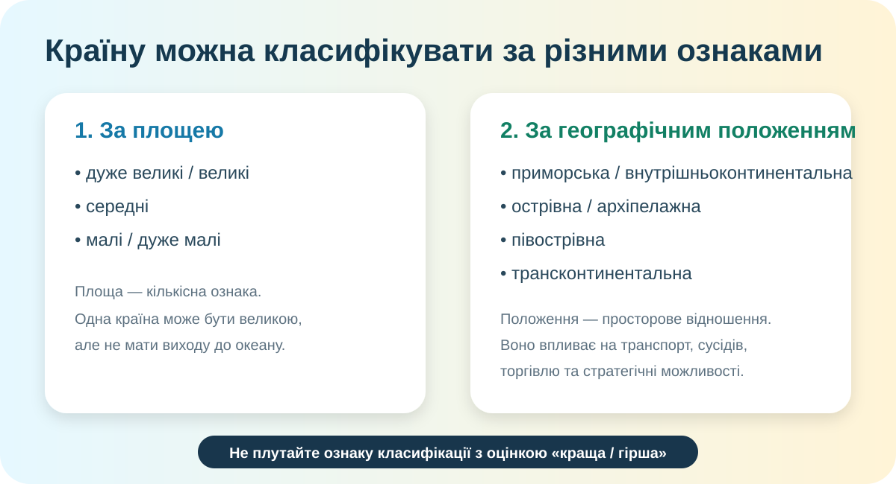

Проблема уроку
Австралія — велика країна. Японія — острівна. Казахстан — внутрішньоконтинентальний. Індонезія — архіпелажна. Але що буде, якщо спробувати розкласти всі країни в одну-єдину шкалу?

Схема навчальна, не карта. Просторові висновки робимо тільки за реальною картою.
1. Класифікуємо країни світу
Реальна карта світу
OpenStreetMap. Масштабуйте й переміщуйте карту. Для політичних кордонів звіряйтеся також з атласом.
Алгоритм
Площа? Вихід до моря? Острівне положення? Півострів?
Берегова лінія, сусіди, материк, острови.
«Країна X є ... за ознакою ...»
Чи може вона одночасно бути в іншій групі? Майже завжди — так.
Практичний кейс А — найбільші держави за площею
Орієнтовні значення округлено до 0,01 млн км²; для навчальної роботи важливий порядок величин, а не суперечка про соті частки через різні методики підрахунку водної площі.
| Держава | Площа, млн км² ≈ | Ще одна ознака положення |
|---|---|---|
| Росія | 17,10 | |
| Канада | 9,98 | |
| США | 9,83 | |
| Китай | 9,60 | |
| Бразилія | 8,51 | |
| Австралія | 7,74 | |
| Індія | 3,29 | |
| Казахстан | 2,72 |
Джерело площ: CIA World Factbook / довідкові дані; значення округлені. Каспійське море не дає Казахстану виходу до Світового океану.
Міні-квест: одна країна — кілька класифікацій
2. Практична робота за КТП: регіони України
Карта України
Що треба нанести в контурну карту
Швидка перевірка карти
Оберіть правильний адміністративний центр. Це не заміна контурної карти — це перевірка, чи не підписали Ви щось дуже творчо.
3. Дослідження: територіальна громада та її сусіди
Василівська територіальна громада
За актуальною сторінкою порталу «Децентралізація» Василівська громада Запорізької області має адміністративний центр у місті Василівка, тип — міська громада, код КАТОТТГ UA23040030000061166.
Відкрити офіційну сторінку громади ↗На порталі є карта й склад громади. Через воєнний стан частина статистики може мати довідковий/довоєнний характер — перевіряйте дату показника.
Завдання «сусід — не сусід»
На карті громади знайдіть її межі й визначте сусідні територіальні громади. Не вгадуйте за назвою району: сусідство — це спільна межа.
CER-висновок практичної роботи
Claim: яка ознака класифікації країн найкраще пояснює їхні просторові можливості — площа чи географічне положення?
є чітке твердження
є 2 конкретні докази
є причинне пояснення
немає підміни ознак
Фінішна перевірка — 10 балів
Введіть дані. Після цього відкриється перевірка.
Домашнє завдання
1. Опрацюйте відповідний параграф електронного підручника за темою класифікації країн.
2. Завершіть контурну карту: межі та адміністративні центри регіонів України.
3. Рівень «дослідник»: оберіть дві країни приблизно подібної площі, але з дуже різним географічним положенням. Напишіть 5–7 речень: як це положення може впливати на транспорт і зовнішні зв’язки.
Електронний підручник / ВШО ↗Джерела для перевірки
Коротке відео для повторення
У відео «Географія ПРОСТО» про географічне положення України блок приблизно 1:31–2:30 присвячений класифікації країн за географічним положенням.
Відкрити фрагмент ↗